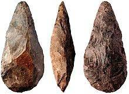

4.1. Paleolítico
Paleolítico (2 500 000 – 40 000 a.C.)
La palabra Paleolítico significa Antigua Edad de Piedra. Los primeros prehistóricos eran nómadas, y sus actividades fundamentales estaban encaminadas hacia la caza y la recolección de frutas silvestres, por lo que dependían de aquellos productos que le ofrecía la naturaleza
OBJETOS TÉCNICOS Y TECNOLOGÍAS INCORPORADAS
- Utilización de huesos y piedras (2 500 000 a.C).
El homo habilis, primer homínido inventor, desarrolla la tecnología del tallado de piedras para obtener filos cortantes. Las primeras piedras eran talladas por una cara llamadas chopper a las que sucedieron más adelante (2 000 000 a.C.) las piedras talladas por ambas caras o chopping tools... Fueron utilizados para cortar, perforar, o raer.
- Lanzas, arcos, flechas y arpones (300 000 a.C.) añadieron seguridad al la caza al poderse disparar desde más lejos de la presa.
- Técnicas de caza en grupo: debido al rudimentario armamento se hizo necesario el empleo de dichas técnicas con el fin de sustentar al clan o tribu.
- El fuego es conocido por el hombre desde hace aproximadamente 500 000 años. El dominio del fuego modificó el modo de vida de las personas pues le ofreció protección frente a los animales salvajes, calor para protegerse del frío y permitirle la cocción de los alimentos vegetales y animales, luz que permitió los hombres refugiarse en cuevas. Posteriormente, el hombre lo emplearía en técnicas de trabajo como fundición de metal o la cocción del barro. Sin embargo, hubo que esperar hasta el 12000 a.C. para conseguir obtener fuego mediante fricción.
RELACIÓN TECNOLOGÍA-SOCIEDAD: SOCIEDAD CAZADORA-RECOLECTORA.
La organización social del Paleolítico se basaba en la caza y se caracterizaba por:
- Jefatura de grupo: son los individuos de mayor prestigio por su sabiduría y habilidad en la fabricación de útiles y en la caza.
- Clanes y tribus: tanto para la caza como para la protección era necesaria la unión de varios individuos (50-100 individuos).
- Nomadismo: tras agotarse los recursos naturales de la zona el clan o tribu emigraba buscando nuevas recursos con los que subsistir.